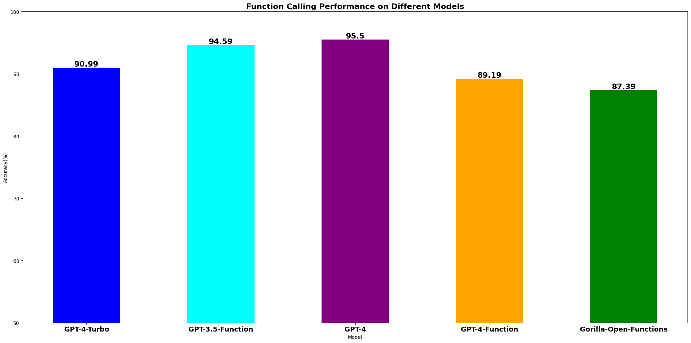
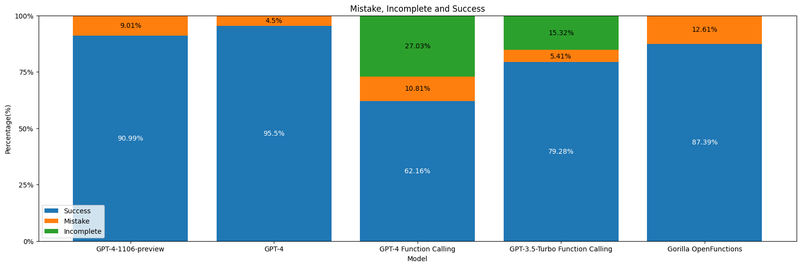

Gorilla OpenFunctions

Gorilla OpenFunctions is a drop-in open-source alternative. Given a prompt and API, Gorilla returns the correctly formatted function call. With Apache 2.0 licensed models, you can integrate OpenFunctions into your applications directly!
OpenFunctions is designed to extend Large Language Model(LLM) Chat Completion feature to formulate executable APIs call given natural language instructions and API context. Imagine if LLM could fill in parameters for a variety of service ranging from Instagram and Doordash to tools like Google Calendar and Stripe. Even users who are less familiar with API calling procedure and programming could use the model to generate APIs call to desired function. Open Function is an LLM that we train using a curated set of API documentations and Question Answer pairs generated from the API documentations. We have continued to expand on the Gorilla Paradigm and sought to improve the quality and accuracy of valid function calling generation.
Quick Links:
- Colab Notebook: OpenFunctions
- Dataset: GitHub
- Models on HuggingFace: gorilla-llm/gorilla-openfunctions-v1
How to use OpenFunctions
 OpenFunctions can write accurate API calls. This applies not just the popular python package and cloud CLI but also any callable functions with API documentations!
OpenFunctions can write accurate API calls. This applies not just the popular python package and cloud CLI but also any callable functions with API documentations!
Using Gorilla OpenFunctions is straightforward:
- Define Your Functions: Provide a JSON file containing descriptions of your custom functions. Each function should contains field:
name, the name of the API,api_call, the way we should invoke this API,description, the functionality of the API, and lastlyparameters, which is a list of parameters pretains to the API call. Below is an example of sufficent API documentation that can feed into Open Function. - Ask Your Question: Describe what you want as if talking to another person.
- Get Your Function Call: The model will return a Python function call based on your request. This opens up possibilities for developers and non-developers alike, allowing them to leverage complex functionalities without writing extensive code.
function_documentaion = {
"name" : "Order Food on Uber",
"api_call": "uber.eat.order",
"description": "Order food on uber eat given a list of items and the quantity of items respectively",
"parameters":
[
{
"name": "restaurants",
"description": "The restaurants user wants to order from"
},
{
"name": "items",
"description": "A list of order user wants to order from restaurants"
},
{
"name": "quantities",
"description": "A list of quantities corresponding to the items ordered"
}
]
}
I want to order five burgers and six chicken wings from McDonlad.
Input:
get_gorilla_response(prompt="I want to order five burgers and six chicken wings from McDonlad.",
functions=[function_documentaion])Output:
uber.eat.order(restaurants="McDonald",item=["chicken wings", "burgers"], quantity=[6,5])OpenFunctions Performance Benchmarking
We are benchmarking our model against current state-of-art model GPT-4-0613 as well as GPT-4 and GPT-3.5-turbo function calling features. Our testing dataset consists of 116 distinct query, API documentation pairs and are crafted by feeding few shot examples into GPT-3.5-turbo and asking the model to generate APIs from different domains including travel, finance, meeting scheduling.
 Suprisingly, we observe that GPT-4 and GPT-3.5 function calling perform better than the State of the Art GPT-4-Turbo model. Our OpenFunctions model is closely behind with tiny margin.To evalate the quality of the ouput, we perform side-by-side examination between the model output and gold answer. From the graph above, we can see that GPT-4 and GPT-3.5-Turbo performs function callings with a higher success rate around 95% than GPT-4 function callings. Our llama-based OpenFunction model is following GPT-4 function calling with a 86% success rate. Below is an example of GPT-4 fails to extract parameters correctly.
Below are two examples of GPT-4 generate unsatisfied results:
"Query": "Determine the monthly mortgage payment for a loan
amount of $200,000, an interest rate of 4%, and a
loan term of 30 years.",
"GPT-4 output":
"{"name": "financ.calculate_mortgage_payment",
"arguments": "{"loan_amount": 200000,
"interest_rate": 4,
"loan_term": 30}"
}",
"Gold answer": "finance.calculate_mortgage_payment(
loan_amount=200000,
interest_rate=0.04,
loan_term=30)"
"Query": "Order me six pack of potato chips and eight
pack of chocolate from target near Berkeley.",
"GPT-4 output":
"{ "name": "target.get",
"arguments": "{
"loc": "Berkeley",
"item": ["six pack of potato chips",
"eight pack of chocolate"],
"quantity": [1, 1]}
}",
"Gold answer": "target.order(
loc=Berkeley,
item=["potato chips", "chocolate"],
quantity=[6,8])"
As we can see from the above mistakes that even using GPT-4 function calling isn't able to guarantee us on satisfactory result on analysis of function parameters. Here, we have a detailed breakdown of the percentage of success, failure of our testing data:
 While the standard GPT model is able to produce definitive results, OpenAI's function calling model will ask follow up question if required parameters are not supplied, which results in a state of no result.When calling to OpenAI's function calling models, if required parameters are not supplied within instruction. This leads the function calling models to output "follow-up" questions requesting the required parameters which results in "incomplete" status as displayed in above graph. We treat "incomplete" execution as "success" during our accuracy calculation because the model recognize the missing parameters successfully. Our Open Function model as well as regular GPT-4, due to its chat complete nature, will fill up the required parameters with place holder or default value which allows undisturbed generation.
OpenFunctions Data Composition
The dataset we trained our model on consists of 14189 API documentations 14189 question-answer pairs. The API documentations are collected from 3 sources:
- Python packages: The Python packages are collected from the official documentation of the packages. We intentionally chose packages that are clean and well-documented and those packages typically belong to scientific computing and machine learning domains.
- RapidAPI: The RapidAPI documents are collected from the API marketplace. Since RapidAPI typically makes requests to an API endpoint. We format the API documentation to have function
requests.getwith properties:url,headers,params. Completing this function will enable the user to callrequests.getsuccessfully to the API endpoint. - Command Line Tool from various cloud provider: Lastly we relies on CLI documentation from AWS, Azure, and etc. We use those documentation to construct python-like function calling.
For each API documentation, we generate three distinct instruction and model answer as our training data. The instruction and model answer pairs are self-generated using few shots examples of correctly utilizing API documentations to extrapolate the function callings. We explicitly prompt the model to take advantage of features like complex value type and more parameters if the specific API has the feature.
Code Function Calling API vs. REST API
During the data collection process, we have observed that general API calling can be divided into 2 categories:
- Code Function Calling APIs
- REST APIs
First, the Code Function Calling APIs are typically seen in external python packages like Numpy, Sklearn. Those APIs are well-defined and easily formatted. In anther word, knowing the 'api_name' e.g. numpy.sum() and the 'arguments' specification, we are able to extrapolate an executable function API. Due to its stable format and fixed locality, it takes relatively few data to fine-tune the model.
On the other hand, the REST APIs also accounts for a significant portion of the APIs in the market. Those APIs are typically provided by third-party hosting and offer a variety of functionality ranging from financial service to weather forecasting. Often time, REST APIs contain three parameter metadata: url, header, and params. Url contains the API endpoints, header usually contains authentication information, and paramters contain information query to the API endpoint. Using requests.get we are able to properly query to the endpoint. However, REST APIs' parameters can exist in different locations. For example, the parameters can be embedded within the URL e.g. gorilla.berkeley.edu/{param1}/{param2}. Another way to represent parameters embedding can be gorilla.berkeley.edu/?query=param1. Different ways of calling REST API make it difficult for our model to handle complex REST API call. As a result, we have explored different sources of REST APIs such as RapidAPI, Postman API to diversify our API Database and generate more accuracte REST API.
Models and Capabilities!
We are happy to release two models: gorilla-openfunctions-v0 and gorilla-openfunctions-v1.
gorilla-openfunctions-v0 is a 13B parameter model trained on top of the 7B LLaMA-v2-chat instruction-tuned model.
It takes-in the users prompt along with a SINGLE API call and returns the function with the right arguments.
gorilla-openfunctions-v0 is a 7B paramter model trained on top of the 7B LLaMA-v2 pre-trained model. gorilla-openfunctions-v0
is our advanced model that takes-in the users prompt along with MULTIPLE API calls and returns the function with the right arguments.
It also supports paralle functions! gorilla-openfunctions-v1 is in early pre-view and you can expect it to get much better over the next few days!
All of the results in the blog are generated using gorilla-openfunctions-v0.
We hope you enjoyed this blog post. We would love to hear from you on Discord, Twitter (#GorillaLLM), and GitHub.
If you would like to cite Gorilla:
@inproceedings{patil2023gorilla,
title={Gorilla: Large Language Model Connected with Massive APIs},
author={Shishir G. Patil and Tianjun Zhang and Xin Wang and Joseph E. Gonzalez},
year={2023},
journal={arXiv preprint arXiv:2305.15334}
}